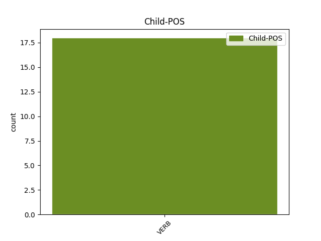

Distribution of features within this leaf

Agreement Rules sorted by frequency.
- When the dependent token is the complement for auxiliary(comp:aux) of the head token, and the dependent token is VERB.
1 Taci _ _ _ _ 0 _ _ _
2 , _ _ _ _ 0 _ _ _
3 Julian _ _ _ _ 0 _ _ _
4 , _ _ _ _ 0 _ _ _
5 ai avea VERB Vmip2s Mood=Ind|Number=Sing|Person=2|Tense=Pres|VerbForm=Fin 0 _ _ _
6 să _ _ _ _ 0 _ _ _
7 -ți _ _ _ _ 0 _ _ _
8 scrântești scrânti VERB Vmip2s Mood=Ind|Number=Sing|Person=2|Tense=Pres|VerbForm=Fin 5 comp:aux _ _
9 mâinile _ _ _ _ 0 _ _ _
10 . _ _ _ _ 0 _ _ _
Disagree Examples:
1 O _ _ _ _ 0 _ _ _
2 ura _ _ _ _ 0 _ _ _
3 pentru _ _ _ _ 0 _ _ _
4 că _ _ _ _ 0 _ _ _
5 era _ _ _ _ 0 _ _ _
6 tânără _ _ _ _ 0 _ _ _
7 , _ _ _ _ 0 _ _ _
8 drăguță _ _ _ _ 0 _ _ _
9 și _ _ _ _ 0 _ _ _
10 fără _ _ _ _ 0 _ _ _
11 sex _ _ _ _ 0 _ _ _
12 , _ _ _ _ 0 _ _ _
13 pentru _ _ _ _ 0 _ _ _
14 că _ _ _ _ 0 _ _ _
15 voia _ _ _ _ 0 _ _ _
16 să _ _ _ _ 0 _ _ _
17 se _ _ _ _ 0 _ _ _
18 culce _ _ _ _ 0 _ _ _
19 cu _ _ _ _ 0 _ _ _
20 ea _ _ _ _ 0 _ _ _
21 și _ _ _ _ 0 _ _ _
22 nu _ _ _ _ 0 _ _ _
23 avea avea VERB Vmii3s Mood=Ind|Number=Sing|Person=3|Tense=Imp|VerbForm=Fin 0 _ _ _
24 să _ _ _ _ 0 _ _ _
25 facă face VERB Vmsp3 Mood=Sub|Person=3|Tense=Pres|VerbForm=Fin 23 comp:aux _ _
26 niciodată _ _ _ _ 0 _ _ _
27 treaba _ _ _ _ 0 _ _ _
28 asta _ _ _ _ 0 _ _ _
29 , _ _ _ _ 0 _ _ _
30 pentru _ _ _ _ 0 _ _ _
31 că _ _ _ _ 0 _ _ _
32 în _ _ _ _ 0 _ _ _
33 jurul _ _ _ _ 0 _ _ _
34 taliei _ _ _ _ 0 _ _ _
35 ei _ _ _ _ 0 _ _ _
36 suple _ _ _ _ 0 _ _ _
37 și _ _ _ _ 0 _ _ _
38 frumoase _ _ _ _ 0 _ _ _
39 , _ _ _ _ 0 _ _ _
40 care _ _ _ _ 0 _ _ _
41 parcă _ _ _ _ 0 _ _ _
42 te _ _ _ _ 0 _ _ _
43 ruga _ _ _ _ 0 _ _ _
44 s- _ _ _ _ 0 _ _ _
45 o _ _ _ _ 0 _ _ _
46 cuprinzi _ _ _ _ 0 _ _ _
47 cu _ _ _ _ 0 _ _ _
48 brațul _ _ _ _ 0 _ _ _
49 , _ _ _ _ 0 _ _ _
50 nu _ _ _ _ 0 _ _ _
51 era _ _ _ _ 0 _ _ _
52 decât _ _ _ _ 0 _ _ _
53 eșarfa _ _ _ _ 0 _ _ _
54 aia _ _ _ _ 0 _ _ _
55 roșie _ _ _ _ 0 _ _ _
56 odioasă _ _ _ _ 0 _ _ _
57 , _ _ _ _ 0 _ _ _
58 simbolul _ _ _ _ 0 _ _ _
59 agresiv _ _ _ _ 0 _ _ _
60 al _ _ _ _ 0 _ _ _
61 frigidității _ _ _ _ 0 _ _ _
62 . _ _ _ _ 0 _ _ _
1 Poliția _ _ _ _ 0 _ _ _
2 Gândirii _ _ _ _ 0 _ _ _
3 avea avea VERB Vmii3s Mood=Ind|Number=Sing|Person=3|Tense=Imp|VerbForm=Fin 0 _ _ _
4 să _ _ _ _ 0 _ _ _
5 pună pune VERB Vmsp3 Mood=Sub|Person=3|Tense=Pres|VerbForm=Fin 3 comp:aux _ _
6 mâna _ _ _ _ 0 _ _ _
7 pe _ _ _ _ 0 _ _ _
8 el _ _ _ _ 0 _ _ _
9 oricum _ _ _ _ 0 _ _ _
10 . _ _ _ _ 0 _ _ _
1 Rămase _ _ _ _ 0 _ _ _
2 nemișcat _ _ _ _ 0 _ _ _
3 ca _ _ _ _ 0 _ _ _
4 un _ _ _ _ 0 _ _ _
5 șobolan _ _ _ _ 0 _ _ _
6 , _ _ _ _ 0 _ _ _
7 cu _ _ _ _ 0 _ _ _
8 speranța _ _ _ _ 0 _ _ _
9 deșartă _ _ _ _ 0 _ _ _
10 că _ _ _ _ 0 _ _ _
11 respectivul _ _ _ _ 0 _ _ _
12 , _ _ _ _ 0 _ _ _
13 oricine _ _ _ _ 0 _ _ _
14 ar _ _ _ _ 0 _ _ _
15 fi _ _ _ _ 0 _ _ _
16 fost _ _ _ _ 0 _ _ _
17 , _ _ _ _ 0 _ _ _
18 avea avea VERB Vmii3s Mood=Ind|Number=Sing|Person=3|Tense=Imp|VerbForm=Fin 0 _ _ _
19 să _ _ _ _ 0 _ _ _
20 plece pleca VERB Vmsp3 Mood=Sub|Person=3|Tense=Pres|VerbForm=Fin 18 comp:aux _ _
21 după _ _ _ _ 0 _ _ _
22 o _ _ _ _ 0 _ _ _
23 singură _ _ _ _ 0 _ _ _
24 încercare _ _ _ _ 0 _ _ _
25 . _ _ _ _ 0 _ _ _
1 Și _ _ _ _ 0 _ _ _
2 cum _ _ _ _ 0 _ _ _
3 putea _ _ _ _ 0 _ _ _
4 ști _ _ _ _ 0 _ _ _
5 că _ _ _ _ 0 _ _ _
6 stăpânirea _ _ _ _ 0 _ _ _
7 Partidului _ _ _ _ 0 _ _ _
8 nu _ _ _ _ 0 _ _ _
9 avea avea VERB Vmii3s Mood=Ind|Number=Sing|Person=3|Tense=Imp|VerbForm=Fin 0 _ _ _
10 să _ _ _ _ 0 _ _ _
11 dureze dura VERB Vmsp3 Mood=Sub|Person=3|Tense=Pres|VerbForm=Fin 9 comp:aux _ _
12 la _ _ _ _ 0 _ _ _
13 infinit _ _ _ _ 0 _ _ _
14 ? _ _ _ _ 0 _ _ _
1 Jurnalul _ _ _ _ 0 _ _ _
2 avea avea VERB Vmii3s Mood=Ind|Number=Sing|Person=3|Tense=Imp|VerbForm=Fin 0 _ _ _
3 să _ _ _ _ 0 _ _ _
4 ajungă ajunge VERB Vmsp3 Mood=Sub|Person=3|Tense=Pres|VerbForm=Fin 2 comp:aux _ _
5 scrum _ _ _ _ 0 _ _ _
6 , _ _ _ _ 0 _ _ _
7 iar _ _ _ _ 0 _ _ _
8 el _ _ _ _ 0 _ _ _
9 vapori _ _ _ _ 0 _ _ _
10 . _ _ _ _ 0 _ _ _